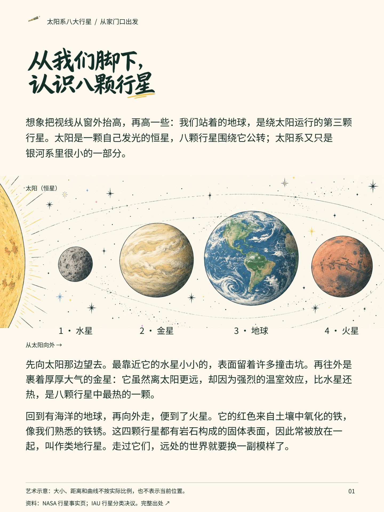
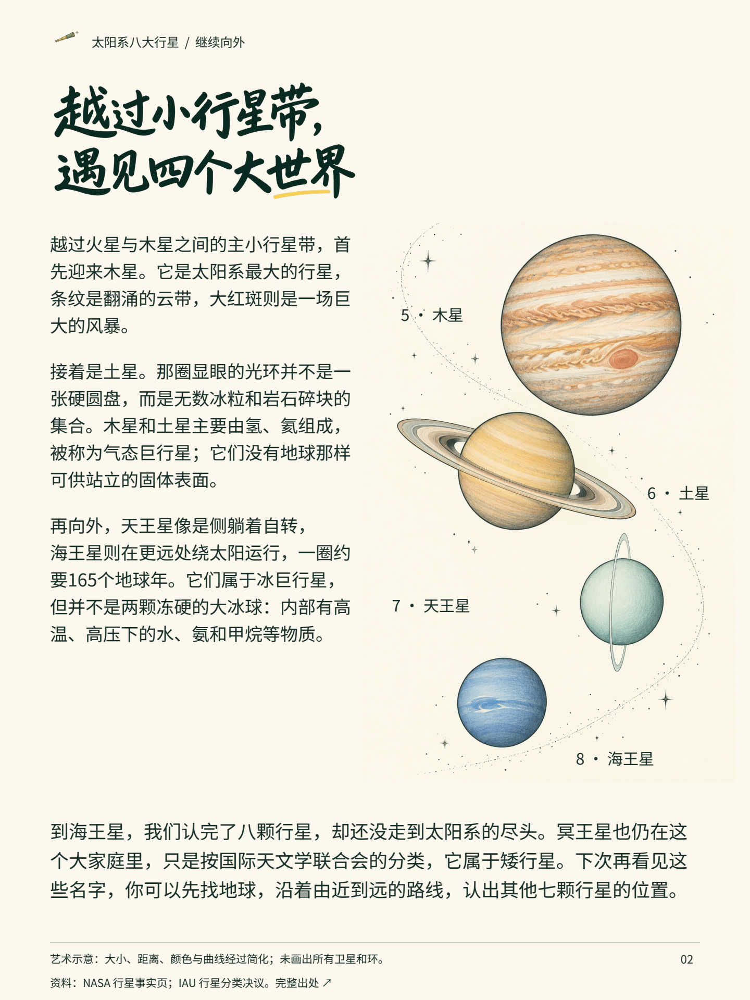

太阳系八大行星
同一份两页案例的文字阅读版，适合手机与辅助阅读工具。插画细节可展开每页成稿查看。
从我们脚下，
认识八颗行星
想象把视线从窗外抬高，再高一些：我们站着的地球，是绕太阳运行的第三颗行星。太阳是一颗自己发光的恒星，八颗行星围绕它公转；太阳系又只是银河系里很小的一部分。
先向太阳那边望去。最靠近它的水星小小的，表面留着许多撞击坑。再往外是裹着厚厚大气的金星：它虽然离太阳更远，却因为强烈的温室效应，比水星还热，是八颗行星中最热的一颗。
回到有海洋的地球，再向外走，便到了火星。它的红色来自土壤中氧化的铁，像我们熟悉的铁锈。这四颗行星都有岩石构成的固体表面，因此常被放在一起，叫作类地行星。走过它们，远处的世界就要换一副模样了。
画面索引：1 · 水星；2 · 金星；3 · 地球；4 · 火星。
查看第1页图文成稿

本页内容已在上方以可选择文字完整呈现。艺术示意：大小、距离和曲线不按实际比例，也不表示当前位置。越过小行星带，
遇见四个大世界
越过火星与木星之间的主小行星带，首先迎来木星。它是太阳系最大的行星，条纹是翻涌的云带，大红斑则是一场巨大的风暴。
接着是土星。那圈显眼的光环并不是一张硬圆盘，而是无数冰粒和岩石碎块的集合。木星和土星主要由氢、氦组成，被称为气态巨行星；它们没有地球那样可供站立的固体表面。
再向外，天王星像是侧躺着自转，海王星则在更远处绕太阳运行，一圈约要165个地球年。它们属于冰巨行星，但并不是两颗冻硬的大冰球：内部有高温、高压下的水、氨和甲烷等物质。
到海王星，我们认完了八颗行星，却还没走到太阳系的尽头。冥王星也仍在这个大家庭里，只是按国际天文学联合会的分类，它属于矮行星。下次再看见这些名字，你可以先找地球，沿着由近到远的路线，认出其他七颗行星的位置。
画面索引：5 · 木星；6 · 土星；7 · 天王星；8 · 海王星。
查看第2页图文成稿

本页内容已在上方以可选择文字完整呈现。艺术示意：大小、距离、颜色与曲线经过简化；未画出所有卫星和环。